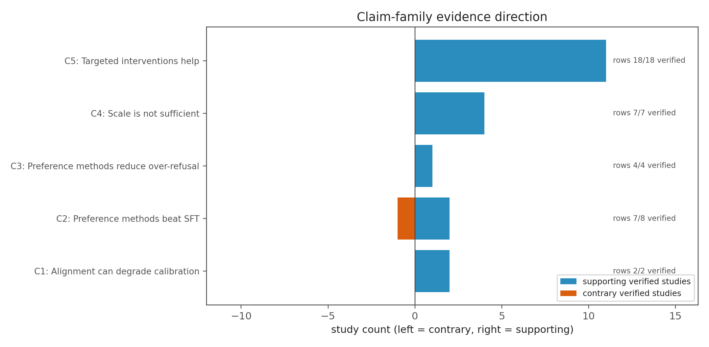
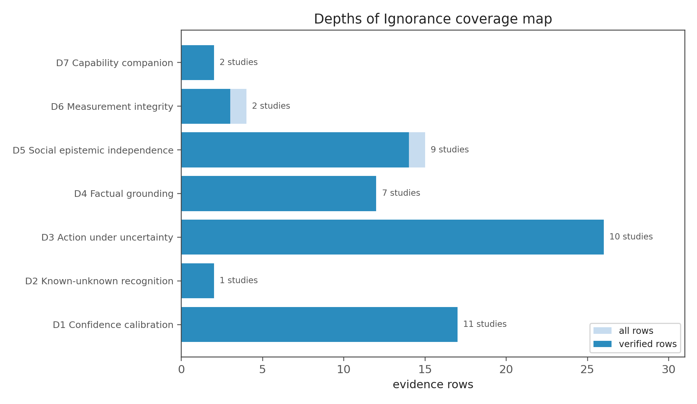
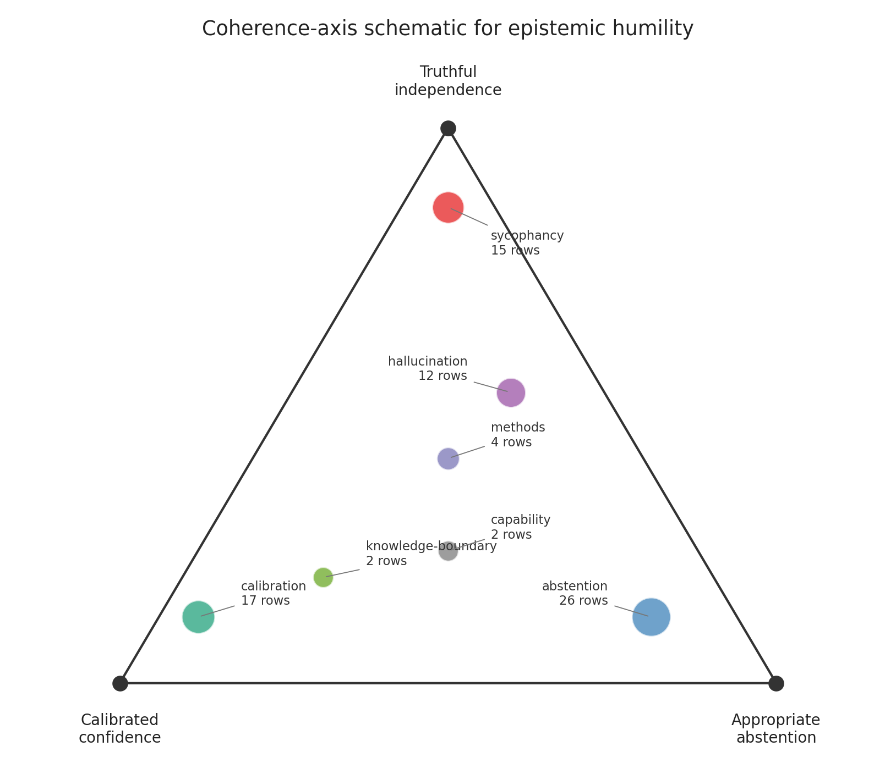
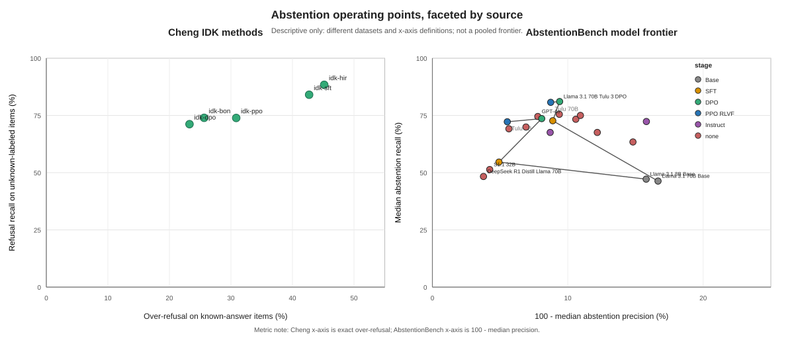
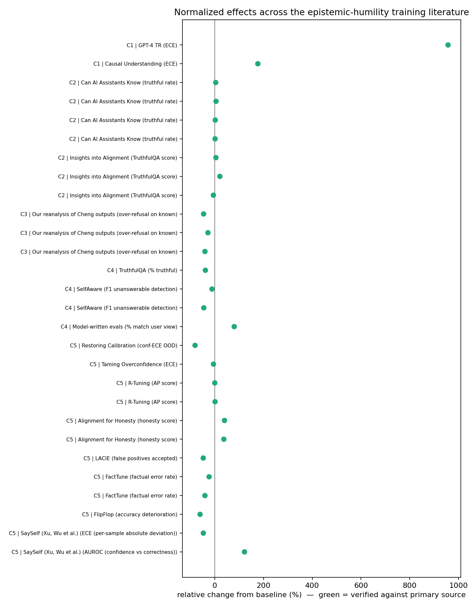
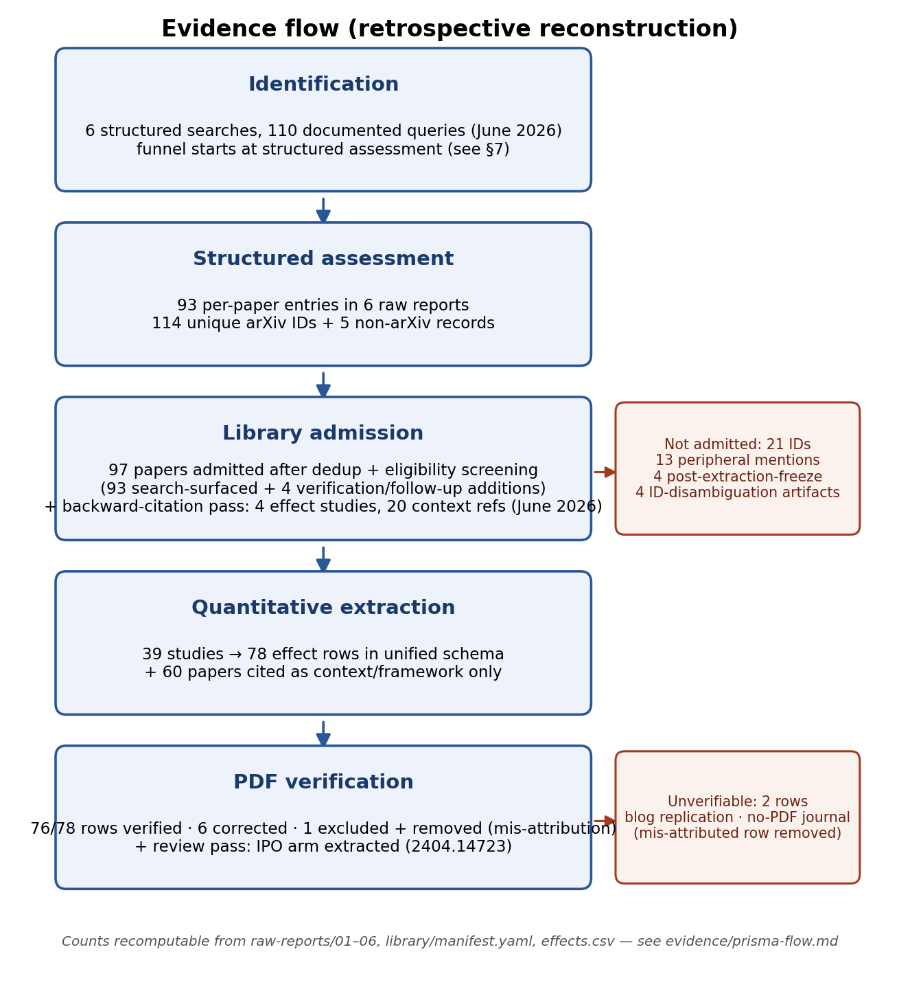
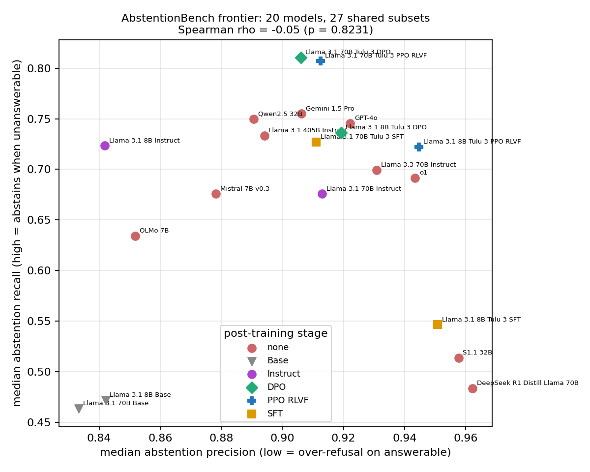
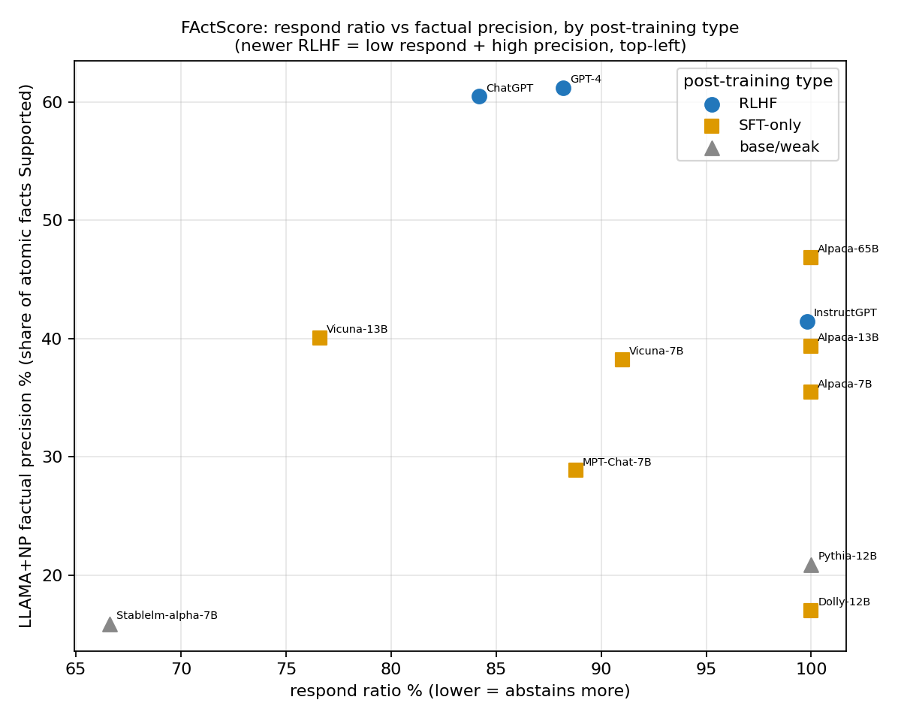

Claim-family direction
observedCompact direction summary for registered claim families, using the same selectors described in the manifest.
{kind=link}

Meta-analysis review companion
This standalone page gathers the generated figures and compact tables used during manuscript review. It is intentionally static and dependency-free so reviewers can inspect nearby artifacts from a local checkout.
Not a canonical source. Manuscript figures and tables remain the generated static artifacts linked below. This HTML page is only a review companion and should not be cited as the source of record.
Observed paths are relative to papers/paper-1-taxonomy-framework/analysis/. If a linked output is missing in a future checkout, regenerate artifacts with the owning analysis scripts rather than editing this gallery.
These cards preview the main generated artifacts expected by the review workflow. Manuscript SVG/PDF exports are canonical where generated; PNG files shown here are review previews.
Compact direction summary for registered claim families, using the same selectors described in the manifest.

Coverage schematic mapping evidence areas to the DEPTHS dimensions used for manuscript framing.

Conceptual schematic positioning claim areas across confidence, truth, and abstention axes.

Faceted operating-point review figure for Cheng IDK and AbstentionBench outputs; descriptive only, not pooled as one frontier. SVG is canonical; PDF export may be unavailable unless cairosvg is installed.

Additional static outputs found in the figures directory. They are linked for review convenience without changing manuscript source-of-truth boundaries.
Forest-style relative-effect plot generated by the synthesis script.

Generated PRISMA-style flow figure for review of screening/accounting structure.

Frontier, ladder, and scale plots from the AbstentionBench reanalysis.

Generated supporting figures for rarity/precision and RewardCal contamination audit review.

Concise summaries of generated CSV/Markdown tables. Reviewers should open the linked files for exact rows and values.
Five registered claim families are summarized with row counts, verification counts, supporting/contrary studies, and absolute relative-change ranges.
| Claim | Rows | Verified | Studies | Median abs rel change |
|---|---|---|---|---|
| C1 calibration degradation | 2 | 2 | 2 | 567.0% |
| C2 preference beats SFT | 8 | 7 | 3 | 5.0% |
| C3 over-refusal reduction | 4 | 4 | 2 | 40.0% |
| C4 scale not sufficient | 7 | 7 | 4 | 41.5% |
| C5 targeted interventions | 16 | 16 | 10 | 40.1% |
Includes Cheng IDK rows and AbstentionBench model-frontier rows. The generated note says these sources use different datasets and metric definitions, so they should not be pooled or compared as one frontier.
Two study-prefixed reanalysis entries contribute 12 verified rows across abstention-related comparisons.
reanalysis-2401.13275: four verified rows for SFT versus preference comparisons.reanalysis-2506.09038: eight verified rows for scale, SFT-versus-base, and SFT-versus-preference comparisons.Review-facing limitations table covering unverified rows, sparse variance reporting, selector-boundary exclusions, and capability companion rows.
Maps generated figures and compact tables to source data and explicit mapping assumptions. This is the first place to check when a visual encoding needs audit.
Use this checklist when reviewing a regenerated checkout. Missing generated outputs should be fixed in the owning generator workflow, not in this HTML companion.
{kind=link}
{kind=link}
{kind=link}
{kind=link}
{kind=link}
{kind=link}
{kind=link}
{kind=link}
{kind=link}
{kind=link}
{kind=link}